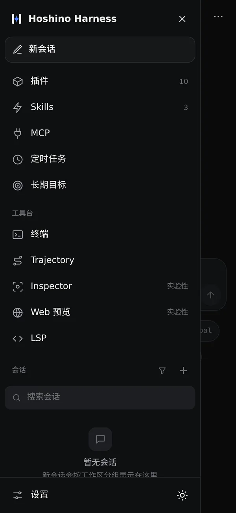
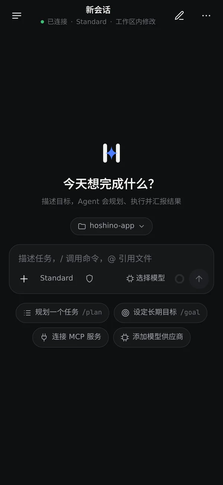

05 · 下载
现在就
装上。
一个 APK，内核、Alpine 与 Node 24 都在里面。装好后填上你的 key，就能开始。
0.2.1-m2.4 · Android · arm64-v8a
- Android
- arm64-v8a
- 用户自带 API key（搜索无需 key）
- 无需 root，Shizuku 可选


三步
- 01
下载 APK 并允许安装。
Release 页附有全部 APK 与 SHA256，可自行校验。 - 02
首次启动等待内核解压，显示“已连接”。
内核在本机 Alpine 里启动，界面经 loopback WebSocket 接上它。 - 03
在设置里添加 provider、base URL、模型和 key。
Anthropic Messages 与 OpenAI 兼容接口均可；key 存在 Android Keystore。联网搜索无需 key。
之后的版本可在应用内自我更新。
部分功能仍在真机验收，以 GitHub 交付报告为准。